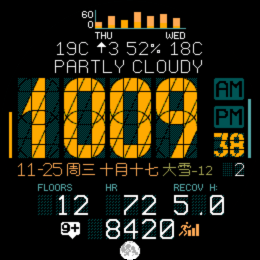

天气独享两行，保留英文留白
顶端可选飞翼或趋势图。支持天气的机型使用两行显示，第一行可自定义 4 项天气指标（如温度、风力、湿度、体感温度或降水概率），第二行留给英文天气状况（如 PARTLY CLOUDY），简洁易读，不与日历挤在一起。
基于开源表盘 Segment34 Mk3 的中文改版，面向 Garmin AMOLED 和 MIP 手表。表盘中央用大号数码字显示时分，下方显示星期、农历日期和节气倒计时。可以直接在手表上调整布局、预览配色。


自上而下依次为近 7 天趋势图、两行天气、大号时分数字与两侧进度条、中文农历节气日期栏及下方运动数据。点击表盘可查看大图。
天气在上，时分用大号数码字显示在中央，日期在下。
顶端可选飞翼或趋势图。支持天气的机型使用两行显示，第一行可自定义 4 项天气指标（如温度、风力、湿度、体感温度或降水概率），第二行留给英文天气状况（如 PARTLY CLOUDY），简洁易读，不与日历挤在一起。
时间下方显示月日、星期和农历日期。节气倒计时用淡色显示，节气当天恢复正常亮度。星期可选中文、英文或隐藏。
两位秒数移至主时间右侧，日期行末随之腾出一个独立状态位——默认显示久坐等级，也可切为压力、身体电量、恢复时间或通知数；主时间左右两侧还可独立配置进度条。
AMOLED 机型采用加粗高对比底栏标题，底部数字可在 点阵、混合、线条 三种样式间切换；电池、月相、像素通知气泡与中英文训练状态图标均针对小屏重新微调。
围绕星期、农历与二十四节气实际用到的 45 个汉字逐字绘制，分为 24 px（主流 AMOLED）与 15 px（360×360 AMOLED 及 MIP）两套纯 1-bit 点阵字，不靠生硬缩放，小屏上笔画照样清晰，也与主时间的数码字风格一致。

常用调整直接做进手表菜单，按表盘自上而下的位置分成 5 组——表上看到哪一栏想换，就直接进对应的组；同时也完整支持 Garmin Connect 手机端配置。
打开表盘「自定义」即可看到 5 个分区；进入任一分组（如「顶部天气」），就能按盘面顺序调整该区显示的图表与指标。


在「配色样式」里选择日间或夜间配色时，手表直接实时呈现整张表盘效果：左侧沿表圈切换色环，右侧确认或取消，满意后再应用。


在 Connect IQ 下载 1.1.1，支持 51 款 AMOLED 和 25 款 MIP 手表。fēnix 5、5X 和 5 Plus 默认显示月相、海拔和今日总消耗，不显示天气和日出日落。5 和 5X 在手机上设置，5 Plus 也支持表端设置。查看完整机型